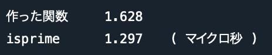

▲
top
top
Pythonで素数判定を高速にしたい
効率的な素数探索を目指して
その簡単な証明を記すので、興味がなければ読み飛ばしても良い。
まず、正の整数 n は必ず正の整数 x、y を用いて n = xy と表すことができる。
たとえば n = 10 である時、x と y の組み合わせは
( x, y ) = ( 1, 10 )
( 2, 5 )
( 5, 2 )
( 10, 1 ) の４つである。
ここで注目して欲しいのは x と y が上下に対称的に登場していることである。 加えて、n = xy において n と x がわかっている時 y は一意に定まることを考えれば掛け算の片方だけ( x と y の片方だけ )を考えれば良い。
なのでこの時に考えるべき因数は x = 1, 2 の２つのみである。 そして、全ての整数は１で割り切れるので探索する必要がないことを考慮すると、 n = 10 の素数探索において考えるべき整数は2以上であるので x = 2 のみであると言える。
次に x と y が上下に対称的になる境界線を考える。
n = xy において x = y が成り立つのは x = √n の時であり、x が √n を超えた後に登場する数字は x と y の対称性を考えると既に登場していると言える。
( n = 100 の時の x と y を全て書き出してみれば直感的に理解できるであろう。)
以上のことより、正の整数 n が素数かどうかを判定するのに探索するべき整数は 2 以上 √n 以下に収まる。
( x, y ) = ( 1, 10 )
( 2, 5 )
( 5, 2 )
( 10, 1 ) の４つである。
ここで注目して欲しいのは x と y が上下に対称的に登場していることである。 加えて、n = xy において n と x がわかっている時 y は一意に定まることを考えれば掛け算の片方だけ( x と y の片方だけ )を考えれば良い。
なのでこの時に考えるべき因数は x = 1, 2 の２つのみである。 そして、全ての整数は１で割り切れるので探索する必要がないことを考慮すると、 n = 10 の素数探索において考えるべき整数は2以上であるので x = 2 のみであると言える。
次に x と y が上下に対称的になる境界線を考える。
n = xy において x = y が成り立つのは x = √n の時であり、x が √n を超えた後に登場する数字は x と y の対称性を考えると既に登場していると言える。
( n = 100 の時の x と y を全て書き出してみれば直感的に理解できるであろう。)
以上のことより、正の整数 n が素数かどうかを判定するのに探索するべき整数は 2 以上 √n 以下に収まる。
また、入力が１以下であれば素数ではないし、２か３であれば確定で素数であるので探索から除外できる。
上記の理論に従って素数探索の関数を書いた。
from math import *
def f( n ):
try:
if( n > 3 ):
for i in range( 2, int( pow( n, 1/2 ) ) + 1 ): # 2 以上 int(√n) 以下
if( n % i == 0 ):
return False
elif( n < 2 ):
return False
return True
except:
return False
def f( n ):
try:
if( n > 3 ):
for i in range( 2, int( pow( n, 1/2 ) ) + 1 ): # 2 以上 int(√n) 以下
if( n % i == 0 ):
return False
elif( n < 2 ):
return False
return True
except:
return False
この関数は、入力が素数なら True を、素数でなければ False を返すものである。
次に、Pythonに提供されている関数と比較してみる。
使うのはsympyパッケージのisprime関数である。 今回作った関数とisprime関数がそれぞれ引数を入れてから戻り値を出すまでの時間を10万回計測し、その平均を出すと結果は下のようになった。

結果は0.3マイクロ秒程の差であった。
今回の関数では探索する範囲を収縮させて効率化を図ったが、４以上の正の偶数を因数として考慮する必要がないことや、既に登場した整数の倍数を探索から除外することなどまだまだ改善できそうである。
今後、この関数よりも速い探索を見つけられたら続きとして記そうと思う。
にっきのページに戻る